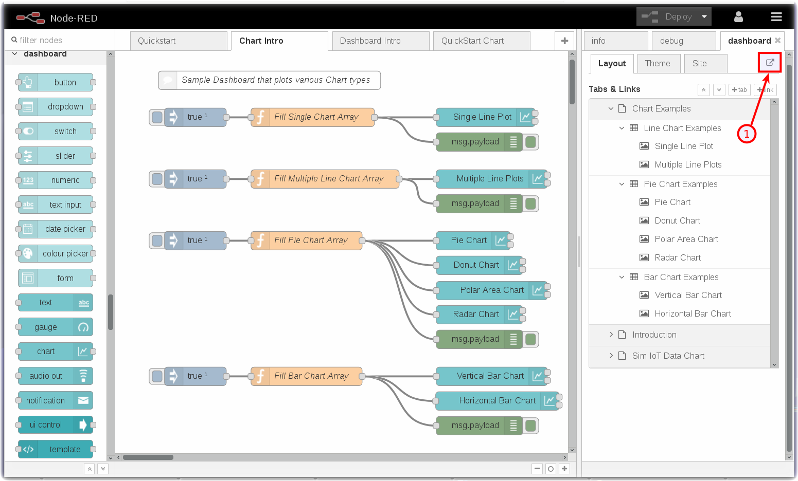
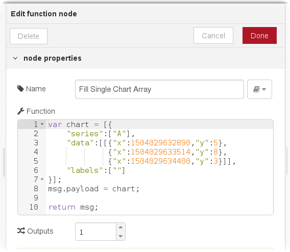
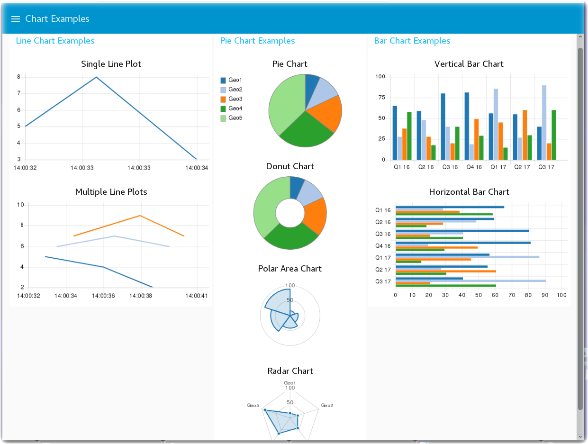
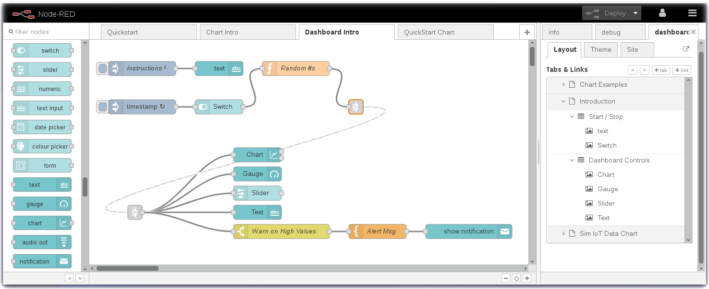
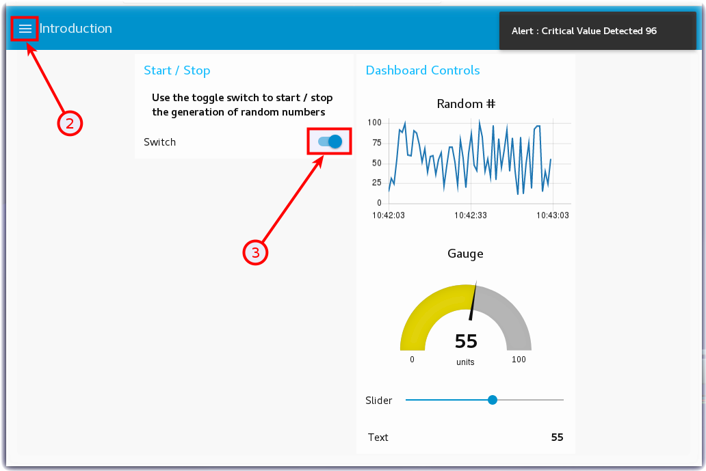
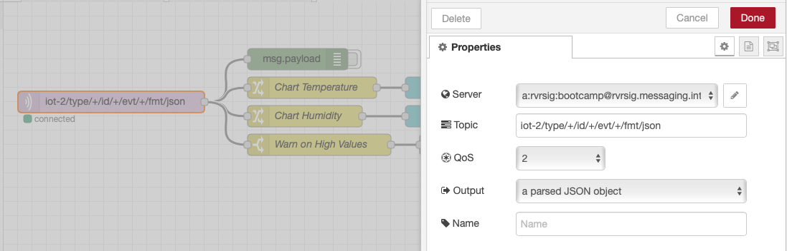

Node-RED Dashboard Charts - Plot Environmental Sensor Data¶
Lab Objectives¶
In this lab you will import Node-RED flows which create Dashboard Charts. After learning about Node-RED Dashboard Charts, you will be able to display temperature and humidity graphs of the Device environmental sensors. You will learn:
- How to create a Node-RED Dashboard
- Experiment with Chart types
- Plot Real Time sensor data
- Trigger alerts when the real-time sensor data exceeds a threshold value
Introduction¶
In this section you will learn about Node-RED Dashboard Charts and then create a chart to graph the sensor data arriving from the device.
Step 1 - Add the Dashboard nodes to the Node-RED pallet¶
Follow the steps outlined in the introduction to Node-RED to import the node-red-dashboard nodes to your Node-RED pallet
- From the Node-RED menu (☰), select Manage Pallet*
- Goto the Install tab
- Search for the node-red-dashboard nodes
- Press the install button to install the nodes
- Close the Pallet Manager window when the nodes have been installed
Step 2 - Import the Node-RED Dashboard Chart Flows¶
Open the “Get the Code” github URL listed below, mark or Ctrl-A to select all of the text, and copy the text for the flow to your Clipboard. Recall from a previous section, click on the Node-RED Menu, then Import, then Clipboard. Paste the text of the flow into the Import nodes dialog and press the red Import button. Finally, click on the red Deploy button in the upper right corner.
Node-RED Dashboard Charts : Get the Code
Step 3 - Learn about various Node-RED Dashboard Chart types¶
- You might have noticed that the flow import in the prior step actually created three tabs. These are called Node-RED flows.
- The Chart Intro flow introduces you to the various Node-RED Dashboard Chart types that are available. You can create Line charts, various Pie chart styles – Pie, Donut, Polar Area, Radar - and vertical and horizontal Bar charts. 
- For illustration, the Fill Single Chart Array function node above fills an array of static sample data and sends the data to the Chart node to visualize.

- The Node-RED flow is not nearly as interesting as the charts that it renders. To launch the Node-RED Dashboard, in the Node-RED sidebar, turn to the dashboard tab and click on the Launch button (1) [See two pictures above]. 
Step 4 – Generating and Displaying data in Node-RED Dashboards¶
The next Node-RED flow - Dashboard Intro - uses a variety of UI widgets to display data in the Node-RED Dashboard. There is a Switch node that turns On/Off a random number generator function node. The simple random numbers are sent to a line Chart node, a Gauge node, a Slider node, a Text node and, if the number exceeds a threshold, will display an alert notification message.

- Turn to the Node-RED Dashboard browser tab that you launched in Step 2, click on the menu tab (2) in the upper left corner, and select the Introduction tab.
- On the Introduction dashboard, turn on the Switch (3) to start the data visualization.
- Experiment with / observe the Dashboard controls. 
Step 5 - Plot Device Environmental Sensor Data¶
Now that you have learned about Node-RED Dashboard and Chart types, you are ready to plot the real-time device environmental sensor data. If you are working in the lite plan on the IBM Cloud memory is limited, so you may want to delete the tabs Chart Intro and Dashboard Intro by double clicking each tab to open up the tab configuration sidebar, where you will find a delete button.
- Turn to the next flow - Plot DHT Sensor Data
- The mqtt in node may need to be configured to pull in the config you created in the previous section.is already configured to receive status Device Events from the ESP8266 Device Type.
- The Change nodes extract the
msg.payload.d.tempandmsg.payload.d.humidityvalues from the JSON object sent over MQTT from the device environmental sensor to Watson IoT Platform. - The environmental sensor values are sent to two charts to plot Temperature and Humidity. 
- Turn to the Node-RED Dashboard browser tab that you launched in Step 2, click on the tab in the upper left corner, and select the ESP8266 Workshop tab.

Step 6 - Trigger Alerts when Real-Time Sensor Data Exceeds a Threshold Value¶
Often IoT devices and sensors are deployed so that alerts can be triggered when the real time sensor data exceeds a threshold value. In this last Step, the flow checks the temperature values and, if the temperature exceeds the threshold, triggers a Node-RED Dashboard notification.
- In the prior step, the flow included three nodes that have not yet been discussed.
- A Switch node is configured to Warn on High Values by testing if
msg.payload.d.tempis greater than 30C. - A Template node is configured to construct a sentence
Alert : Critical Value Detected {{payload.d.temp}} - The Alert message is sent to a Node-RED Dashboard Notification node to display in the browser.
- This flow could be extended to call a Twilio node to send a SMS message. It could raise an alarm in another system by triggering a REST API call to the manufacturing production operations systems.

- Return to the Node-RED Dashboard ESP8266 Workshop tab and increase the temperature of your DHT sensor above 30C.